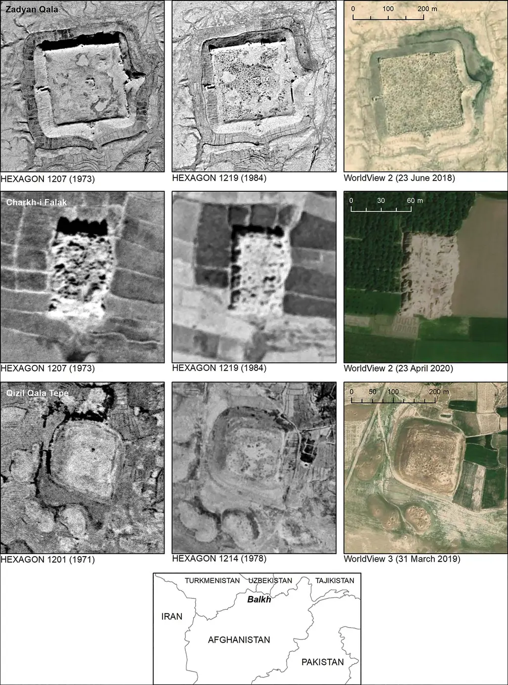

| Burial Mound | Memor. Monument | Ruins | Triang. Point | Trig. Point on Burial Mound |
|---|---|---|---|---|
| 734 | 2 | 34 | 10 | 5 |
Evaluating the Potential of Cartographic and Satellite Data for Landscape Archaeology in the Area of Tell Zurghul
Andrea Titolo (University of Turin)
andrea.titolo@unito.it
Talk overview
- Introduction
- Remote Sensing and Cartography in Landscape Research
- Research questions
- Data and methods
- Soviet Topographic Maps
- Hexagon Satellite Images
- Results
- Quantitative data from Soviet Maps
- Preliminary data from HEXAGON Images
- Conclusions and discussion
Introduction
1 2 3 4
RS and Cartography in Landscape Research
1 2 3 4
- Remote sensing methods are an integral part of any archaeological landscape research, used at different stages of the project
- Primary examples from Western Asia are the use of satellite photos like CORONA images, or aerial photos from the U2.
- The great results yielded by these data sometimes seem to overshadow the use of regular cartographic data, used in the background but rarely mentioned.

RS and Cartography in Landscape Research
1 2 3 4
- On the other hand, Corona successors Hexagon images have only seen few applications
- Moreover, Soviet topographic maps use is (to my knowledge) mostly limited to Central Asian contexts

Research questions
1 2 3 4
- Are the Soviet Topographic Maps at the available scale (1:200.000) a useful integration in the landscape archaeology workflow in Southern Mesopotamia?
- Are the Hexagon images a valuable addition to the remote sensing toolkit available for Southern Mesopotamia?
- Will the combination of the above increase the amount of archaeological evidence in the region under study?
Study area
1 2 3 4
- 2144 km2 main study area, S-SE of Nigin (Tell Zurghul)
- We also inspected a larger area delimited according to the coverage of the acquired soviet topographic maps
Data and Methods
1 2 3 4
Soviet Topographic Maps - Overview
1 2 3 4
- Resulting from a secret topographic mapping program started in the 50s, high level of detail and almost global coverage (Postnikov 2002)
- Circulation outside of the USSR from the 90s
- Number of maps produced is impossible to quantify, but certainly more than two million (Davis and Kent 2018)
- Nowadays copyrigth-free, mostly available through commercial vendors (georeferenced/non georeferenced)
- Still limited academic uses, mostly from Caucasus and Central Asia (Franklin and Hammer 2018; Rondelli et al. 2013; Wordsworth 2018)
Soviet Topographic Maps - Types of map
1 2 3 4
- Military Series (SK-42)
- Small Scale (1:1,000,000 - 1:500,000)
- Medium Scale (1:200,000 - 1:100,000)
- Large Scale (1:50,000, 1:25,000, 1:10,000)
- Civil Series (SK-63)
- Maps covering the Soviet Unione were based upon aerial photography and field survey.
- Unclear how they were made for foreign countries
Soviet Topographic Maps - Types of map
1 2 3 4
- Military Series (SK-42)
- Small Scale (1:1,000,000 - 1:500,000)
- Medium Scale (1:200,000 - 1:100,000)
- Large Scale (1:50,000, 1:25,000, 1:10,000)
- Civil Series (SK-63)
- Maps covering the Soviet Unione were based upon aerial photography and field survey.
- Unclear how they were made for foreign countries
Soviet Topographic Maps - Technical Data
1 2 3 4
- The geographic projection of the maps is Gauss-Kruger, datum Pulkovo 1942
- Other metadata present on the map includes edition date, state of the area, author, and others like production factory etc. (Davis and Kent 2018)
- состояние местности на YEAR г Изѧание YEAR г. (State of the area/terrain in YEAR Edition/Edited YEAR)
Soviet Topographic Maps for Archaeology
1 2 3 4
Outside of Soviet Union, maps were available only at medium scale (1:100k/200k)
- The maps registered many landscape features and provide rich amount of data useful for archaeology
- Decodification of symbols are available in manuals (e.g. US Department of the Army 1958)
- Landscape and man-made features (urban areas, land use, water management, etc.)
Soviet Topographic Maps for Archaeology
1 2 3 4
Outside of Soviet Union, maps were available only at medium scale (1:100k/200k)
- The maps registered all features of the landscape and provide rich amount of data useful for archaeology
- Decodification of symbols are available in manuals (e.g. US Department of the Army 1958)
- Landscape and man-made features (urban areas, land use, water management, etc.)
- e.g. разв (ruins) o кург (kurgan, often following the real shape of the feature)
Soviet Topographic Maps for Archaeology
1 2 3 4
Outside of Soviet Union, maps were available only at medium scale (1:100k/200k)
- The maps registered all features of the landscape and provide rich amount of data useful for archaeology
- Decodification of symbols are available in manuals (e.g. US Department of the Army 1958)
- Landscape and man-made features (urban areas, land use, water management, etc.)
- e.g. разв (ruins) o кург (kurgan, often following the real shape of the feature)
- Underground water conduit with wells (qanat)
Soviet Topographic Maps - Our Dataset
1 2 3 4
- Four topographic maps at 1:200.000 scale
- Maps at larger scale not available from the vendor
- Coverage: 30.028 km2
- Downloaded from: https://maps.vlasenko.net
- Time period: 1990 (Edited in 1991)
- Possible combination of different sources

Working with the Soviet Topographic Maps
1 2 3 4
- Georeferencing using the coordinates on the map proved difficult, as the outcome resulted in imprecision (2-3 km errors) and heavy distortion
- Possible reason are attested changes in datum used by the soviet military, or how QGIS handles the transformation
- More metadata are not present on the map
- Maps were georeferenced in QGIS using a variable amount of GCPs and a Helmert transformation
- Results were acceptable with a maximum error of around 200m depending on the area
Working with the Soviet Topographic Maps
1 2 3 4
- Digitalization of features for each grid square in all four maps
- Remote sensing check of digitized features
- When coverage was available, CORONA and HEXAGON were used as well
- Otherwise Google Earth/Bing
- Crosschecked with other known geospatial dataset of sites location:
- Jotheri (2016)
- Ane.kmz (Pedersén 2012)
- Atlas of the Archaeological Sites in Iraq (DGA (1976))
HEXAGON Satellite Images
1 2 3 4
- Codename for the third and most prolific U.S. intelligence satellite program, also known as KH-9 (Keyhole-9).
- Successors to the KH-7 (CORONA)
- 20 missions between 1971 and 1986, with photographs acquired until 1984.
- Greater area (340x24 km) than the CORONAs, with higher resolution (up to 0.6 m) (Fowler 2016; Hammer et al. 2022).
- Declassified in 2000(2002) and 2011(2013)
- From 2020, easier acquisition through USGS
HEXAGON Satellite Images - Processing
1 2 3 4
- Suggested procedure by Hammer et al. (2022)
- Second Polynomial Transformation
- 15 Ground Control Points (GCPs)
- Georeference single frames and then join them in GIS
HEXAGON Satellite Images Dataset
1 2 3 4
- 4 strips (52 frames, 46 GB)
- Downloaded from USGS as part of a larger project (30$ per strip)
- Coverage: c. 6680 km2
- Time period: July 1982
- No cloud-free images for the winter and autumn season
Working with HEXAGON Images
1 2 3 4
- Adopted procedure:
- Georeferenced single frames
- Third Polynomial transformation in QGIS
- Cubic resampling
- ~ 100 GCPs per frame
- Precision: ~ 1-2 m
Working with HEXAGON Images
1 2 3 4
- Georeferencing and orthorectification process still in progress (12 frames fully processed)
- Identification of mounded features based on remote sensing inspection grid (5x5 km), and (for now) limited to the area South of Tell Zurghul
- Landscape features digitalization is still in progress
Results
1 2 3 4
Results - Soviet Topographic Maps
1 2 3 4
- 785 Features digitized from the topographic maps
- Location of most features between Al-Amarah and Nassiryah and especially North of Lagash (c. 63%)
- Only a part of what can be recorded from these maps, as the digitalization of other lanscape features is still in progress
Results - Soviet Topographic Maps
1 2 3 4
- 411 features not visible (52%)
- Possible reasons: anthropic activities, uneven coverage of declassified images, general inaccuracies
268 features were identifiable as mounded features (34%)
- 131 features were recognized in one of the three dataset used for crosscheck.
- 106 features were not visible mounds, but presented other characteristics (soil color difference, shape etc.) to isolate them as features of interest (14%).
| Burial Mound | Memor. Monument | Ruins | Triang. Point | Trig. Point on Burial Mound |
|---|---|---|---|---|
| 734(360) | 2(1) | 34(8) | 10(2) | 5(3) |
Results - Soviet Topographic Maps
1 2 3 4
Results - Soviet Topographic Maps
1 2 3 4
- 268 features were identifiable as archaeological features (mounds)
- 6 were visible only on satellite images
- 180 were visible only on modern images
- 82 were visible on both
Any assumption on survivability must take into account the lower visibility on Declassified images and their limited coverage (especially HEXAGON)
Results - HEXAGON Images
1 2 3 4
- Hexagon analysis integrated into an already ongoing remote inspection
- Hexagon inspection helped removing false positives (where CORONA images resolution was not enough) and added 18 new features of interest.
- Total features: 56
- 5 features were also highlighted on the Soviet maps
Results - HEXAGON Images
1 2 3 4
How do HEXAGON images compare with CORONA images?
- Reinspection of features visible on CORONA images
- All of them were visible on HEXAGON images as well
- New features on HEXAGON imagery were mostly mounded elements (but either too blurry or not visible on CORONA images)
Results - HEXAGON Images
1 2 3 4
How do HEXAGON images compare with CORONA images?
- Reinspection of features visible on CORONA images
- All of them were visible on HEXAGON images as well
- New features on HEXAGON imagery were mostly mounded elements (but either too blurry or not visible on CORONA images
Results - HEXAGON Images
1 2 3 4
How do HEXAGON images compare with CORONA images?
- Reinspection of features visible on CORONA images
- All of them were visible on HEXAGON images as well
- New features on HEXAGON imagery were mostly mounded elements (but either too blurry or not visible on CORONA images
- Deserted areas did not do well as far as visibility is concerned
Results - HEXAGON Images
1 2 3 4
How do HEXAGON images compare with CORONA images?
- Reinspection of features visible on CORONA images
- All of them were visible on HEXAGON images as well
- New features on HEXAGON imagery were mostly mounded elements (but either too blurry or not visible on CORONA images
- Deserted areas did not do well as far as visibility is concerned
- Sometimes CORONA images have better results due to landscape change
Conclusions
1 2 3 4
Conclusions
1 2 3 4
- Analyzed how the two datasets can be used in the lower mesopotamian context
- Soviet topographic maps offer a good dataset useful as a guide for remote sensing and ground survey
Soviet Topographic Maps - Advantages
1 2 3 4
- Not limited to tell/mounded features but rich of details of archaeological interest
- Overall map features can help in mitigate uncertainty in location
- Shape is sometimes true to the actual shape visible on satellite image
- Known sites and Remote Sensing check provided validation that the features represented were actually mounded sites
Soviet Topographic Maps - Disadvantages
1 2 3 4
- Lacking information on source materials
- Dating may not be optimal (landscape change)
- In some cases, when there are no distinctive traits for a feature on the maps, it can be difficult to associate it with a feature visible on satellite images (or known dataset)
- Inaccuracy of georeferenced results (can be improved)
- Scanned maps might be missing metadata
Conclusions
1 2 3 4
- Analyzed how the two datasets can be used in the lower mesopotamian context
- Soviet topographic maps offer a good dataset useful as a guide for remote sensing and ground survey
- HEXAGON images improve the capabilities of CORONA and offer another way of inspecting the landscape at higher resolution
HEXAGON Satellite Images - Advantages
1 2 3 4
- Following also Hammer et al. (2022):
- Higher resolution than CORONA images
- Larger coverage per image
- More images and more seasonal coverage, limiting the effects of cloud cover(situational)
HEXAGON Satellite Images - Disadvantages
1 2 3 4
- Later acquisition than CORONA (Landscape changes)
- Sometimes unnecessary for features already visible on CORONA imagery
- Use has to be weighted carefully, especially for larger areas.
- Larger file size (more difficult to handle and work with)
Conclusions
- Analyzed how the two datasets can be used in the lower mesopotamian context
- Soviet topographic maps offer a good dataset useful as a guide for remote sensing and ground survey
- HEXAGON images improve the capabilities of CORONA and offer another way of inspecting the landscape at higher resolution
- Both datasets offer a good opportunity for time series analysis, especially when combined together and with other datasets
- Together with other data they can be useful for tracing landscape change in the light of Historical Landscape Characterization and Cultural Heritage applications (not only in Southern Mesopotamia)
Thank you for your attention!
Andrea Titolo (andrea.titolo@unito.it)
Link to presentation and data: https://codeberg.org/titoloandrea/QadisyahLAC
References
Davis, M. and Kent, A. J. (2018). Identifying Metadata on Soviet Military Maps: An Illustrated Guide. In M. Altić I. J. Demhardt and S. Vervust (eds.), Dissemination of Cartographic Knowledge, Springer International Publishing, Cham.
DGA (1976). Atlas of the archaeological sites in Iraq (1976 edition), Directorate General of Antiquities; Heritage; Al-Jumhuriya Press, Baghdad.
Fowler, M. J. (2016). The Archaeological Potential of Declassified HEXAGON KH-9 Panoramic Camera Satellite Photographs. Newsletter of the Aerial Archaeology Research Group 53: 30–36.
Franklin, K. and Hammer, E. (2018). Untangling Palimpsest Landscapes in Conflict Zones: A "Remote Survey” in Spin Boldak, Southeast Afghanistan. Journal of Field Archaeology 43: 58–73.
Hammer, E., FitzPatrick, M. and Ur, J. (2022). Succeeding CORONA: Declassified HEXAGON Intelligence Imagery for Archaeological and Historical Research. Antiquity 1–17.
Hammer, E. and Ur, J. A. (2019). Near Eastern Landscapes and Declassified U2 Aerial Imagery. Advances in Archaeological Practice 7: 107–126.
Jotheri, J. (2016). Holocene Avulsion History of the Euphrates and Tigris Rivers in the Mesopotamian Floodplain, PhD thesis, Department of Earth Science, Durham University, Durham.
Pedersén, O. (2012). Ancient Near East on Google Earth: Problems, Preliminary Results, and Prospects. In R. Matthews and J. Curtis (eds.), Proceedings of the 7th International Congress on the Archaeology of the Ancient Near East: 12 April - 16 April 2010, the British Museum and UCL, London. 3, Fieldworks and Recent Research, Harrassowitz, Wiesbaden.
Postnikov, A. V. (2002). Maps for Ordinary Consumers versus Maps for the Military: Double Standards of Map Accuracy in Soviet Cartography, 1917-1991. Cartography and Geographic Information Science 29: 243–260.
Rondelli, B., Stride, S. and García-Granero, J. J. (2013). Soviet Military Maps and Archaeological Survey in the Samarkand Region. Journal of Cultural Heritage 14: 270–276.
US Department of the Army ed. (1958). Soviet Topographic Map Symbols.
Wordsworth, P. (2018). Approaches to Understanding Provincial Structure in the Early Islamic Caucasus: Historic Landscape Characterisation in the Kura Plain. In Wi. Anderson K. Hopper and A. Robinson (eds.), Finding Common Ground in Diverse Environments Proceedings of the Workshop Held at 10th ICAANE in Vienna, April 2016 (Oriental and European Archaeology 8), Austrian Academy of Sciences Press, Vienna, pp.145–159.